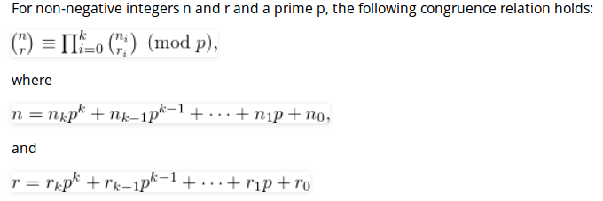

Number theory and Other Mathematical
Table of Contents
Primality Test
Optimized
- Instead of checking till n, we can check till √n because a larger factor of n must be a multiple of smaller factor that has been already checked
- The algorithm can be improved further by observing that all primes are of the form 6k ± 1, with the exception of 2 and 3. This is because all integers can be expressed as (6k + i) for some integer k and for i = -1, 0, 1, 2, 3, or 4; 2 divides (6k + 0), (6k + 2), (6k + 4); and 3 divides (6k + 3). So a more efficient method is to test if n is divisible by 2 or 3, then to check through all the numbers of form 6k ± 1.
bool isPrime(int n) { if (n <= 1) return false; if (n <= 3) return true; if (n%2 == 0 || n%3 == 0) return false; for (int i = 5; i*i <= n; i = i+6) { if (n%i == 0 || n%(i+2) == 0) { return false; } } return true; }
Fermat’s method
This method is a probabilistic method and is based on below Fermat’s Little Theorem.
Fermat's Little Theorem: If n is a prime number, then for every a, 1 <= a < n, an-1 ≡ 1 (mod n) OR an-1 % n = 1 Example: Since 5 is prime, 24 ≡ 1 (mod 5) [or 24%5 = 1], 34 ≡ 1 (mod 5) and 44 ≡ 1 (mod 5) Since 7 is prime, 26 ≡ 1 (mod 7), 36 ≡ 1 (mod 7), 46 ≡ 1 (mod 7) 56 ≡ 1 (mod 7) and 66 ≡ 1 (mod 7)
If a given number is prime, then this method always returns true. If given number is composite (or non-prime), then it may return true or false, but the probability of producing incorrect result for composite is low and can be reduced by doing more iterations.
#include <iostream> #include <cstdlib> using namespace std; int power(int a, unsigned int n, int p) { int res = 1; a = a % p; while (n > 0) { if (n & 1) { res = (res * a) % p; } n >>= 1; a = (a * a) % p; } return res; } bool IsPrime(unsigned int n, int k) { if (n <= 1 || n == 4) { return false; } if (n <= 3) { return true; } while (k > 0) { int a = 2 + rand() % (n - 4); if (power(a, n - 1, n) != 1) { return false; } --k; } return true; } int main() { int k = 3; IsPrime(11, k) ? cout << " true\n" : cout << " false\n"; IsPrime(15, k) ? cout << " true\n" : cout << " false\n"; return 0; }
Miller–Rabin1
This method is a probabilistic method (Like Fermat), but it generally preferred over Fermat’s method.
// It returns false if n is composite and returns true if n
// is probably prime. k is an input parameter that determines
// accuracy level. Higher value of k indicates more accuracy.
bool isPrime(int n, int k)
1) Handle base cases for n < 3
2) If n is even, return false.
3) Find an odd number d such that n-1 can be written as d*2r.
Note that since, n is odd (n-1) must be even and r must be
greater than 0.
4) Do following k times
if (millerTest(n, d) == false)
return false
5) Return true.
// This function is called for all k trials. It returns
// false if n is composite and returns false if n is probably
// prime.
// d is an odd number such that d*2r = n-1 for some r >= 1
bool millerTest(int n, int d)
1) Pick a random number 'a' in range [2, n-2]
2) Compute: x = pow(a, d) % n
3) If x == 1 or x == n-1, return true.
// Below loop mainly runs 'r-1' times.
4) Do following while d doesn't become n-1.
a) x = (x*x) % n.
b) If (x == 1) return false.
c) If (x == n-1) return true.
Example:
Input: n = 13, k = 2. 1) Compute d and r such that d*2r = n-1, d = 3, r = 2. 2) Call millerTest k times. 1st Iteration: 1) Pick a random number 'a' in range [2, n-2] Suppose a = 4 2) Compute: x = pow(a, d) % n x = 43 % 13 = 12 3) Since x = (n-1), return true. IInd Iteration: 1) Pick a random number 'a' in range [2, n-2] Suppose a = 5 2) Compute: x = pow(a, d) % n x = 53 % 13 = 8 3) x neither 1 nor 12. 4) Do following (r-1) = 1 times a) x = (x * x) % 13 = (8 * 8) % 13 = 12 b) Since x = (n-1), return true. Since both iterations return true, we return true.
#include <cstdlib> #include <iostream> using namespace std; // (x ^ y) % p int power(int x, unsigned int y, int p ) { int res = 1; x = x % p; while (y > 0) { if (y & 1) { res = (res * x) % p; } y >>= 1; x = (x * x) % p; } return res; } bool MillerTest(int d, int n) { int a = 2 + rand() % (n - 4); int x = power(a, d, n); if (x == 1 || x == n - 1) { return true; } while (d != n - 1) { x = (x * x) % n; d *= 2; if (x == 1) { return false; } else if (x == n - 1) { return true; } } return false; } bool IsPrime(int n, int k) { if (n <= 1 || n == 4) { return false; } if (n <= 3) { return true; } int d = n - 1; while (d % 2 == 0) { d /= 2; } for (int i = 0; i < k; ++i) { if (MillerTest(d, n) == false) { return false; } } return true; } int main() { int k = 4; cout << "All primes smaller than 100: \n"; for (int n = 1; n < 100; n++) { if (IsPrime(n, k)) { cout << n << " "; } } return 0; }
Sieve of Eratosthenes
Following is the algorithm to find all the prime numbers less than or equal to a given integer n by Eratosthenes’ method:
- Create a list of consecutive integers from 2 to n: (2, 3, 4, …, n).
- Initially, let p equal 2, the first prime number.
- Starting from p, count up in increments of p and mark each of these numbers greater than p itself in the list. These numbers will be 2p, 3p, 4p, etc.; note that some of them may have already been marked.
- Find the first number greater than p in the list that is not marked. If there was no such number, stop. Otherwise, let p now equal this number (which is the next prime), and repeat from step 3.
./Files/sieve_of_eratosthenes.cc
#include <iostream> #include <cstring> using namespace std; void SieveOfEratosthenes(int n) { bool prime[n+1]; memset(prime, true, sizeof(prime)); for (int p = 2; p*p <= n; p++) { // If prime[p] is not changed, then it is a prime if (prime[p] == true) { for (int i = p*2; i <= n; i += p) prime[i] = false; } } for (int p = 2; p <= n; p++) { if (prime[p]) { cout << p << " "; } } } int main() { int n = 30; cout << "Following are the prime numbers smaller " << " than or equal to " << n << endl; SieveOfEratosthenes(n); return 0; }
Wilson’s Theorem
Wilson’s theorem states that a natural number p > 1 is a prime number if and only if
\((n-1)!\ \equiv\ -1 \pmod n\) .
但是由于阶乘是呈爆炸增长的，其结论对于实际操作意义不大。
Pollard’s Rho Algorithm for Prime Factorization2
Given a positive integer n, and that it is composite, find a divisor of it.
Simple approach: Test all integers less than √n
A large enough number will still mean a great deal of work. Pollard’s Rho is a prime factorization algorithm, particularly fast for a large composite number with small prime factors. The Rho algorithm’s most remarkable success was the factorization of eighth Fermat number: 1238926361552897 * 93461639715357977769163558199606896584051237541638188580280321.
Algorithm:
- Start with random x and c. Take y equal to x and f(x) = x2 + c.
- While a divisor isn’t obtained
- Update x to f(x) (modulo n) [Tortoise Move]
- Update y to f(f(y)) (modulo n) [Hare Move]
- Calculate GCD of |x-y| and n
- If GCD is not unity
- If GCD is n, repeat from step 2 with another set of x, y and c
- Else GCD is our answer
#include <cstdio> #include <cstdlib> #include <ctime> using namespace std; long ModularPow(long base, int exp, long mod) { long res = 1; while (exp > 0) { if (exp & 1) { res = (res * base) % mod; } exp >>= 1; base = (base * base) % mod; } return res; } long GCD(long a, long b) { if (a == 0) { return b; } return GCD(b % a, a); } long PollardRho(long n) { srand(time(NULL)); // no prime divisor for 1 if (n == 1) { return n; } if (n % 2 == 0) { return 2; } // pick from the range [2, N) long x = (rand() % (n - 2)) + 2; long y = x; long c = (rand() % (n - 1)) + 1; long d = 1; while (d == 1) { x = (ModularPow(x, 2, n) + c) % n; y = (ModularPow(y, 2, n) + c) % n; y = (ModularPow(y, 2, n) + c) % n; d = GCD(abs(x - y), n); if (d == n) { return PollardRho(n); } } return d; } int main() { long n = 10967535067; printf("One of the divisors for %ld is %ld.", n, PollardRho(n)); return 0; }
Basic and Extended Euclidean algorithms
int gcd(int a, int b) { if (a == 0) return b; return gcd(b % a, a); }
Extended Euclidean Algorithm
Extended Euclidean algorithm also finds integer coefficients x and y such that:
ax + by = gcd(a, b)
As seen above, x and y are results for inputs a and b, a.x + b.y = gcd ----(1) And x1 and y1 are results for inputs b%a and a (b%a).x1 + a.y1 = gcd When we put b%a = (b - (⌊b/a⌋).a) in above, we get following. Note that ⌊b/a⌋ is floor(a/b) (b - (⌊b/a⌋).a).x1 + a.y1 = gcd Above equation can also be written as below b.x1 + a.(y1 - (⌊b/a⌋).x1) = gcd ---(2) After comparing coefficients of 'a' and 'b' in (1) and (2), we get following x = y1 - ⌊b/a⌋ * x1 y = x1
#include <iostream> #include <cstdio> using namespace std; /* ax + by = gcd(a, b) */ int GCDExtended(int a, int b, int *x, int *y) { if (a == 0) { *x = 0; *y = 1; return b; } int x1, y1; int gcd = GCDExtended(b % a, b, &x1, &y1); *x = y1 - (b / a) * x1; *y = x1; return gcd; } int main() { int x, y; int a = 35, b = 15; int g = GCDExtended(a, b, &x, &y); printf("gcd(%d, %d) = %d, x = %d, y = %d\n", a, b, g, x, y); return 0; }
Modular multiplicative inverse
Given two integers ‘a’ and ‘m’, find modular multiplicative inverse of ‘a’ under modulo ‘m’.
The modular multiplicative inverse is an integer ‘x’ such that.
a x ≡ 1 (mod m)
The value of x should be in {0, 1, 2, … m-1},
The multiplicative inverse of “a modulo m” exists if and only if a and m are relatively prime (i.e., if gcd(a, m) = 1).
Works when m and a are coprime
The idea is to use Extended Euclidean algorithms that takes two integers ‘a’ and ‘b’, finds their gcd and also find ‘x’ and ‘y’ such that
ax + by = gcd(a, b)
To find multiplicative inverse of ‘a’ under ‘m’, we put b = m in above formula. Since we know that a and m are relatively prime, we can put value of gcd as 1.
ax + my = 1
If we take modulo m on both sides, we get
ax + my ≡ 1 (mod m)
We can remove the second term on left side as ‘my (mod m)’ would always be 0 for an integer y.
ax + my ≡ 1 (mod m) ax ≡ 1 (mod m)
So the ‘x’ that we can find using Extended Euclid Algorithm is multiplicative inverse of ‘a’
#include <iostream> using namespace std; int GCDExtended(int a, int b, int *x, int *y) { if (a == 0) { *x = 0; *y = 1; return b; } int x1, y1; int gcd = GCDExtended(b % a, a, &x1, &y1); *x = y1 - (b / a) * x1; *y = x1; return gcd; } void ModInverse(int a, int m) { int x, y; int g = GCDExtended(a, m, &x, &y); if (g != 1) { cout << "Inverse doesn't exist" << endl; } else { // m is added to handle negative x int res = (x % m + m) % m; cout << "Modular multiplicative inverse is " << res << endl; } } int main() { int a = 3, m = 11; ModInverse(a, m); return 0; }
Iterative Implementation:
./Files/mode_inverse_iterative.cc
#include <iostream> using namespace std; int ModInverse(int a, int m) { int m0 = m, t, q; int x = 0, y = 1; if (m == 1) { return 0; } while (m > 0) { q = a / m; t = m; m = a % m; a = t; t = x; x = y - q * x; y = t; } if (y < 0) { y += m0; } return y; } int main() { int a = 3, m = 11; cout << "Modular multiplicative inverse is " << ModInverse(a, m) << endl; return 0; }
Works when m is prime
If we know m is prime, then we can also use Fermats’s little theorem to find the inverse.
\begin{equation} \begin{align} a^m-1 ≡ 1 (\mbox{mod } m) \end{align} \end{equation}If we multiply both sides with a-1 and switch the order, we get
\begin{equation} \begin{align} a^{-1} ≡ a^m-2 (\mbox{mod } m) \end{align} \end{equation}Time Complexity of this method is O(Log m)
#include <iostream> using namespace std; int GCD(int a, int b) { if (a == 0) { return b; } return GCD(b % a, a); } // compute x^y under modulo m int Power(int x, unsigned int y, unsigned int m) { if (y == 0) { return 1; } int p = Power(x, y / 2, m) % m; p = (p * p) % m; return (y % 2 == 0) ? p : (x * p) % m; } void ModInverse(int a, int m) { int g = GCD(a, m); if (g != 1) { cout << "Inverse doesn't exist" << endl; } else { cout << "Modular multiplicative inverse is " << Power(a, m-2, m) << endl; } } int main() { int a = 3, m = 11; ModInverse(a, m); return 0; }
Euler’s Totient Function3, 4, 5
Euler’s Totient function Φ(n) for an input n is count of numbers in {1, 2, 3, …, n} that are relatively prime to n,
The idea is based on Euler’s product formula which states that value of totient functions is below product over all prime factors p of n.

#include <iostream> #include <cstdio> using namespace std; int EdulerTotient(int n) { float res = n; for (int p = 2; p * p <= n; ++p) { if (n % p == 0) { while (n % p == 0) { n /= p; } res *= (1.0 - (1.0 / (float)p)); } } if (n > 1) { res *= (1.0 - (1.0 / (float) n)); } return (int)res; } int EdulerTotient1(int n) { int res = n; for (int p = 2; p * p <= n; ++p) { if (n % p == 0) { while (n % p == 0) { n /= p; } res -= res / p; } } if (n > 1) { res -= res / n; } return res; } int main() { int n; for (n = 1; n <= 10; n++) { printf("phi(%d) = %d\n", n, EdulerTotient(n)); printf("phi(%d) = %d\n", n, EdulerTotient1(n)); } return 0; }
Chinese Remainder Theorem
We are given two arrays num[0..k-1] and rem[0..k-1]. In num[0..k-1], every pair is coprime (gcd for every pair is 1). We need to find minimum positive number x such that:
x % num[0] = rem[0], x % num[1] = rem[1], ....................... x % num[k-1] = rem[k-1]
Chinise Remainder Theorem states that there always exists an x that satisfies given congruences.6
A Naive Approach to find x is to start with 1 and one by one increment it and check if dividing it with given elements in num[] produces corresponding remainders in rem[]. Once we find such a x, we return it.
An efficient solution is based on below formula.
x = ( ∑ (rem[i]*pp[i]*inv[i]) ) % prod Where 0 <= i <= n-1 rem[i] is given array of remainders prod is product of all given numbers prod = num[0] * num[1] * ... * num[k-1] pp[i] is product of all but num[i] pp[i] = prod / num[i] inv[i] = Modular Multiplicative Inverse of pp[i] with respect to num[i]
#include <iostream> using namespace std; int ModInverse(int a, int m) { int m0 = m, t, q; int x = 0, y = 1; if (m == 1) { return 0; } while (m > 0) { q = a / m; t = m; m = a % m; a = t; t = x; x = y - q * x; y = t; } if (y < 0) { y += m0; } return y; } int FindMinX(int *num, int *rem, int k) { int prod = 1; for (int i = 0; i < k; ++i) { prod *= num[i]; } int res = 0; for (int i = 0; i < k; ++i) { int pp = prod / num[i]; res += rem[i] * ModInverse(pp, num[i]) * pp; } return res % prod; } int main(void) { int num[] = {3, 4, 5}; int rem[] = {2, 3, 1}; int k = sizeof(num)/sizeof(num[0]); cout << "x is " << FindMinX(num, rem, k); return 0; }
Compute nCr % p
Given three numbers n, r and p, compute value of nCr mod p. Example:
Input: n = 10, r = 2, p = 13 Output: 6 Explanation: 10C2 is 45 and 45 % 13 is 6.
Dynamic Programming
The idea is to compute nCr using below formula:
C(n, r) = C(n-1, r-1) + C(n-1, r) C(n, 0) = C(n, n) = 1
Time complexity of above solution is O(n*r) and it requires O(n) space.
#include <cstring> #include <iostream> using namespace std; int nCrModP(int n, int r, int p) { int C[r+1]; memset(C, 0, sizeof(C)); C[0] = 1; for (int i = 1; i <= n; ++i) { for (int j = min(i, r); j > 0; --j) { C[j] = (C[j] + C[j-1]) % p; } } return C[r]; } int main() { int n = 10, r = 2, p = 13; cout << "Value of nCr % p is " << nCrModP(n, r, p); return 0; }
Lucas Theorem
Lucas Theorem: 
Time Complexity: Time complexity of this solution is O(p2 * Logp n). There are O(Logp n) digits in base p representation of n. Each of these digits is smaller than p, therefore, computations for individual digits take O(p2).
#include <cstring> #include <iostream> using namespace std; int nCrModPDP(int n, int r, int p) { int C[r+1]; memset(C, 0, sizeof(C)); C[0] = 1; for (int i = 1; i <= n; ++i) { for (int j = min(i, r); j > 0; --j) { C[j] = (C[j] + C[j-1]) % p; } } return C[r]; } int nCrModPLucas(int n, int r, int p) { if (r == 0) { return 1; } int ni = n % p; int ri = r % p; return (nCrModPLucas(n/p, r/p, p) * nCrModPDP(ni, ri, p)) % p; } int main() { int n = 1000, r = 900, p = 13; cout << "Value of nCr % p is " << nCrModPLucas(n, r, p); return 0; }
不用除法和求模运算，判断一个数能否被3整除
method1
这个数的每一个位上的数字加起来后，和为3的倍数。每个位相加，然后不断减去3,看结果是不是等于0
bool parse(unsigned int n) { char buffer[1024]; int i,length; int sum = 0; if(n < 10) { if(n == 0 || n == 3 || n == 6 || n == 9) return true; else return false; } sprintf(buffer,"%d",n); length = strlen(buffer); for(i = 0; i != length; i++) sum += buffer[i] - '0'; return parse(sum); }
method2
3 = 0B11 如果a能被3整除，a=b×3,则a的最低位和b的最低位相同，a的次低位=b的次低位 +b的最低位，所以b的次低位=a的次低位-b的最低位，以此求出b。若不能则a不能被3整出
bool divideby3(int n) { int temp; if(n < 0) n = -n; while(n > 0){ temp = n & 1; n >>= 1; n = n - temp; } return (n == 0); }
BIT Manipulation
Find the maximum subarray XOR in a given array
An Efficient Solution can solve the above problem in O(n) time under the assumption that integers take fixed number of bits to store. The idea is to use Trie Data Structure. Below is algorithm.
1) Create an empty Trie. Every node of Trie is going to contain two children, for 0 and 1 value of bit. 2) Initialize pre_xor = 0 and insert into the Trie. 3) Initialize result = minus infinite 4) Traverse the given array and do following for every array element arr[i]. a) pre_xor = pre_xor ^ arr[i] pre_xor now contains xor of elements from arr[0] to arr[i]. b) Query the maximum xor value ending with arr[i] from Trie. c) Update result if the value obtained in step 4.b is more than current value of result.
Let f(i,j) be the xor of the subarray from i to j ,then we have to maximise f(i,j). As f(i,j) = f(1,j) xor f(1,i-1) = currprefix xor f(1,i-1). Where f(1,i-1) is the prefix to be removed.
#include <iostream> #include <limits> using namespace std; #define INT_SIZE 32 struct TrieNode { int value; TrieNode *arr[2]; }; TrieNode *NewNode() { TrieNode *temp = new TrieNode; temp->value = 0; temp->arr[0] = temp->arr[1] = NULL; return temp; } void Insert(TrieNode *root, int pre_xor) { TrieNode *temp = root; for (int i = INT_SIZE - 1; i >= 0; --i) { bool val = pre_xor & (1 << i); if (temp->arr[val] == NULL) { temp->arr[val] = NewNode(); } temp = temp->arr[val]; } temp->value = pre_xor; } int Query(TrieNode *root, int pre_xor) { TrieNode *temp = root; for (int i = INT_SIZE - 1; i >= 0; --i) { bool val = pre_xor & (1 << i); // first look for a prefix that has opposite bit if (temp->arr[1-val] != NULL) { temp = temp->arr[1-val]; } else if (temp->arr[val] != NULL) { temp = temp->arr[val]; } } return pre_xor ^ (temp->value); } int MaxSubarrayXOR(int *arr, int n) { TrieNode *root = NewNode(); Insert(root, 0); int result = numeric_limits<int>::min(), pre_xor = 0; for (int i = 0; i < n; ++i) { pre_xor = pre_xor ^ arr[i]; Insert(root, pre_xor); result = max(result, Query(root, pre_xor)); } return result; } int main() { int arr[] = {8, 1, 2, 12}; int n = sizeof(arr)/sizeof(arr[0]); cout << "Max subarray XOR is " << MaxSubarrayXOR(arr, n) << endl; return 0; }
Find nth Magic Number
A magic number is defined as a number which can be expressed as a power of 5 or sum of unique powers of 5. First few magic numbers are 5, 25, 30(5 + 25), 125, 130(125 + 5), ….
If we notice carefully the magic numbers can be represented as 001, 010, 011, 100, 101, 110 etc, where 001 is 0*pow(5,3) + 0*pow(5,2) + 1*pow(5,1). So basically we need to add powers of 5 for each bit set in given integer n.
#include <iostream> using namespace std; int NthMagicNum(int n) { int pow = 1, answer = 0; while (n) { pow *= 5; if (n & 1) { answer += pow; } n >>= 1; } return answer; } int main() { int n = 5; cout << "5th magic number is " << NthMagicNum(n) << endl; return 0; }
Sum of bit differences among all pairs
Given an integer array of n integers, find sum of bit differences in all pairs that can be formed from array elements. Bit difference of a pair (x, y) is count of different bits at same positions in binary representations of x and y. For example, bit difference for 2 and 7 is 2.
Examples:
Input: arr[] = {1, 3, 5}
Output: 8
All pairs in array are (1, 1), (1, 3), (1, 5)
(3, 1), (3, 3) (3, 5),
(5, 1), (5, 3), (5, 5)
Sum of bit differences = 0 + 1 + 1 +
1 + 0 + 2 +
1 + 2 + 0
= 8
An Efficient Solution can solve this problem in O(n) time using the fact that all numbers are represented using 32 bits (or some fixed number of bits). The idea is to count differences at individual bit positions.
#include <iostream> using namespace std; int SumBitDifferences(int *arr, int n) { int ret = 0; for (int i = 0; i < 32; ++i) { int count = 0; for (int j = 0; j < n; ++j) { if (arr[j] & (1 << i)) { ++count; } } ret += (count * (n - count) * 2); } return ret; } int main() { int arr[] = {1, 3, 5}; int n = sizeof arr / sizeof arr[0]; cout << SumBitDifferences(arr, n) << endl; return 0; }
cc
INCLUDE: "./Files/" src c+